Recette complète : ce qui ne va pas, ce que je propose
Recette du 19.11.2026 par trois agents (téléphone, tablette, PC), défauts vérifiés sur capture. Ce qui avait une seule bonne réponse est déjà corrigé (en bas de page). Restent les points qui demandent ton choix. Chaque « après » est le vrai site local, avec la proposition appliquée dans la page : rien n'est encore codé.
Sous chaque point : un bouton par choix et un champ de commentaire. En bas, « Copier le texte » rassemble tes réponses.
1. Facture annulée : elle part comme une facture valable
Ce qui ne va pas. Le PDF d'une facture annulée est celui de l'émission : aucune mention « annulée », et la section de paiement garde un QR valable (ici CHF 968.05). Sur la page de la facture, « Envoyer » reste le bouton principal. Le client peut payer une facture que l'artisan a annulée.

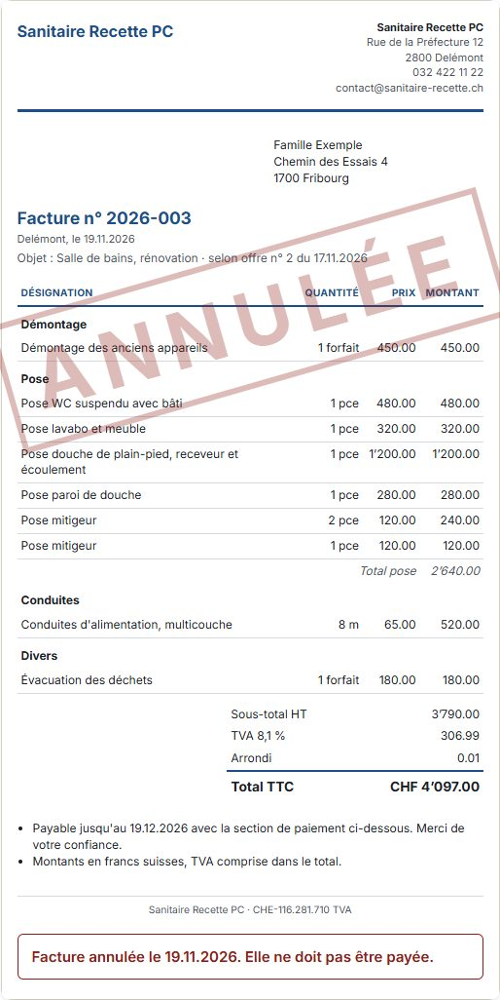
Et le bouton du bas de la page de la facture :
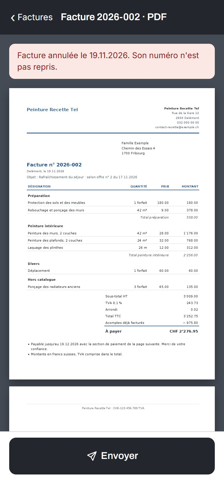
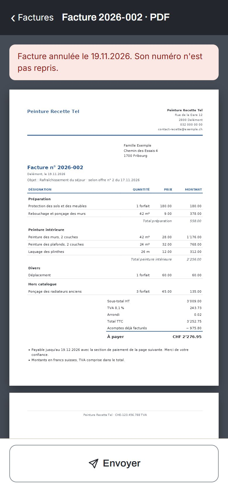
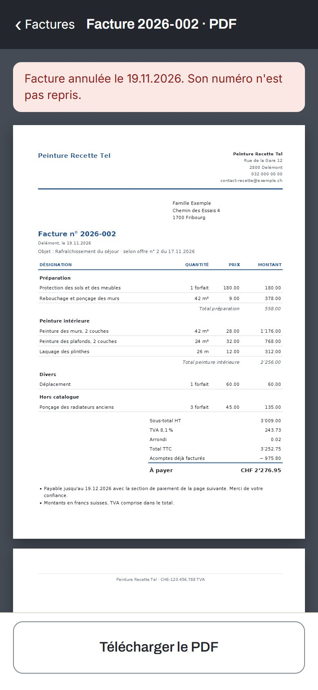
Comment : le PDF est figé à l'émission. À l'annulation, l'application en fabrique un second, marqué annulé, et c'est lui qu'on voit et qu'on envoie. L'original reste archivé.
Ton choix
2. Couleur de marque : le document du client sous 7:1
Ce qui ne va pas. L'artisan choisit sa teinte ; l'application accepte un contraste de 4,5:1. Le vert de la démo (#2E7D32) donne 5,13:1 sous le texte blanc du bandeau, des titres de colonnes et du total, et pour le titre « OFFRE N° 911 ». Le projet vise 7:1.
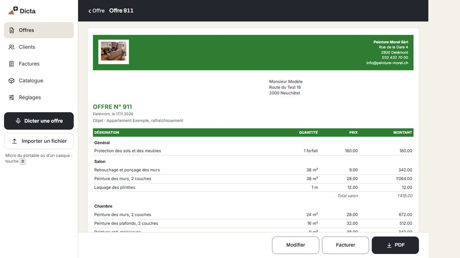
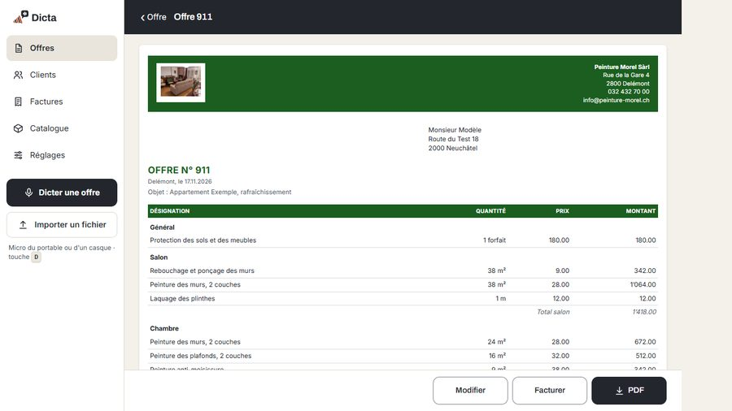
Ton choix
3. Offre au téléphone : la barre du bas prend un quart de l'écran
Ce qui ne va pas. Total, boutons de 64 px, onglets et place du micro : 212 px fixes sur 844 (25 %), 29 % sur un téléphone de 360 px. C'est l'effet cumulé de tes décisions D3, B4 et R1 A.
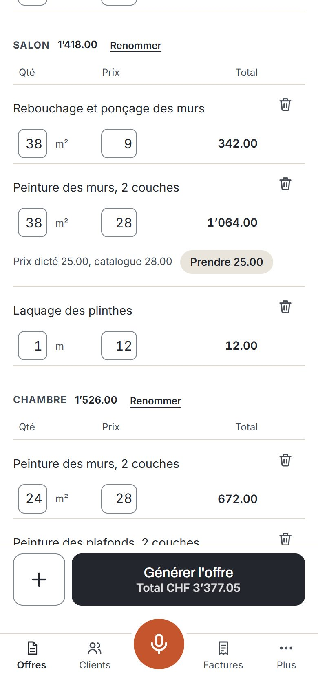
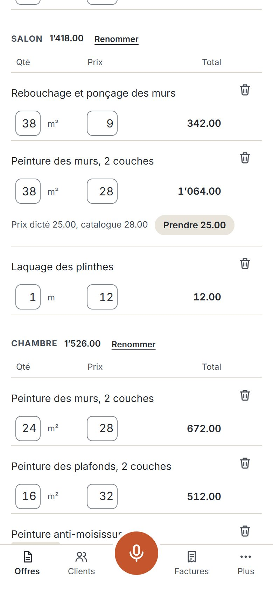
Ton choix
4. Lignes libres : deux gros boutons sous chacune
Ce qui ne va pas. Chaque ligne hors catalogue porte « Créer le produit » et « Rattacher à un produit » en pleine largeur. Sur l'offre 910 : 18 boutons, plus hauts que les lignes, qui noient les chiffres.
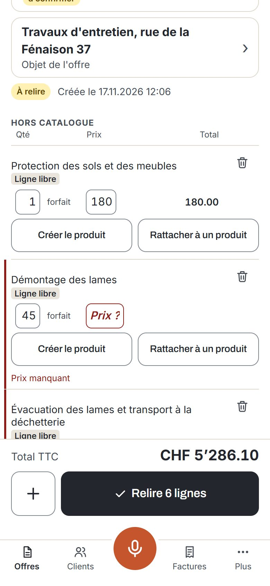
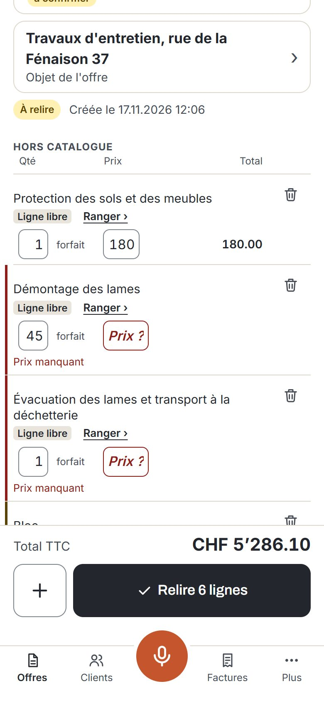
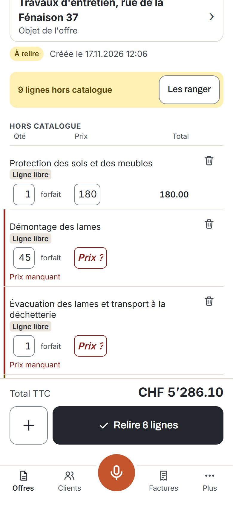
Ton choix
5. PC : archiver ou supprimer une offre, introuvable à la souris
Ce qui ne va pas. Les deux boutons ne paraissent qu'en glissant la carte, un geste du doigt. À la souris, rien ne les montre ; au clavier, les deux premières tabulations tombent sur eux alors qu'ils sont cachés.
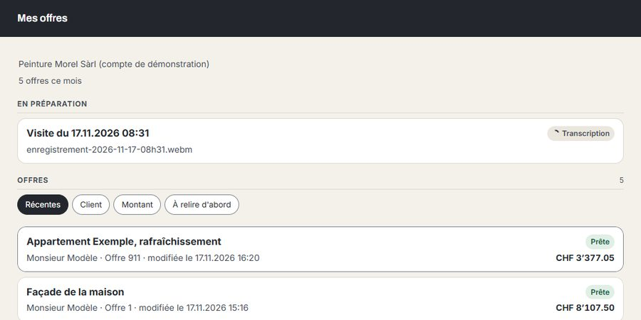
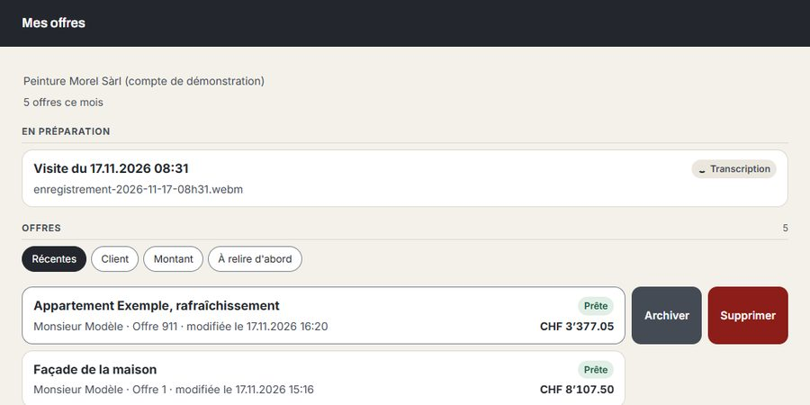
Ton choix
6. Annuler une facture : la page qui confirme, et l'impasse
Ce qui ne va pas. Trois boutons sans hiérarchie : « Annuler seulement » flotte au milieu, l'action qui détruit est en noir alors que « Supprimer » un produit est en rouge. Et quand un acompte est déduit par la finale, l'erreur « 409 » s'affiche avec son message coupé en titre et une seule sortie, l'accueil.
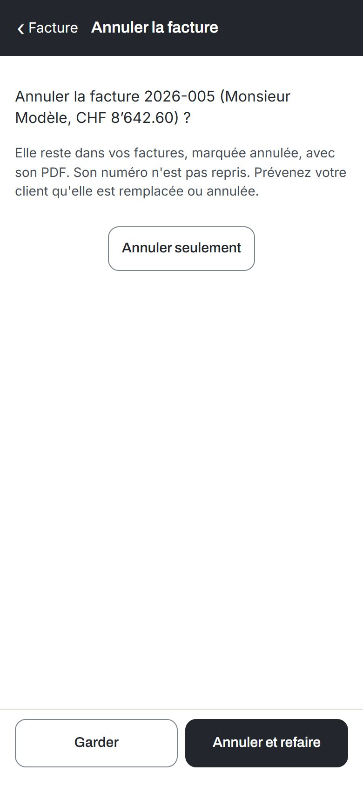
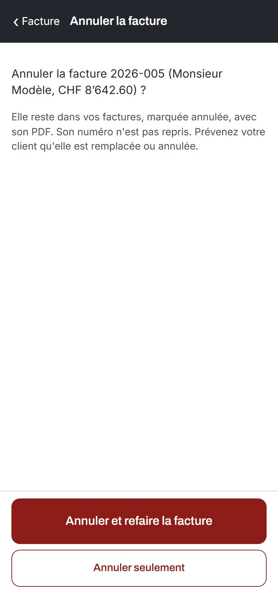
Ton choix pour la confirmation
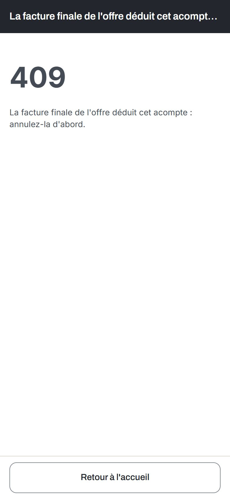
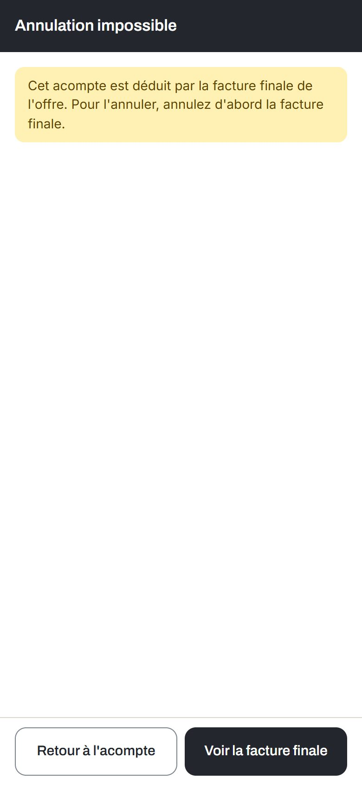
Ton choix pour l'impasse
7. PC : le bandeau qui couvre les champs, et les mots du téléphone
Ce qui ne va pas. Le bandeau « supprimée · Annuler » est centré sur la fenêtre : avec le document à côté, il couvre la quantité et le prix d'une ligne.
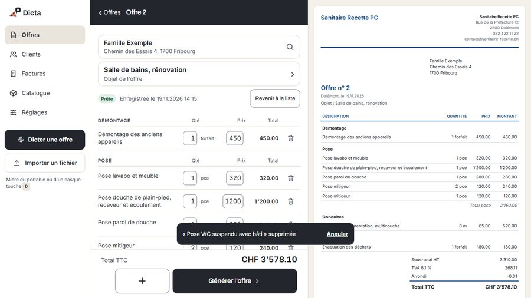
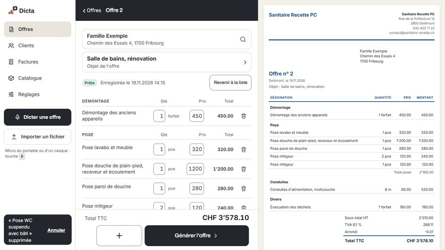
Ton choix pour le bandeau
Des phrases du téléphone restent au PC. Je propose une version pour chacun :
| Écran | Au téléphone (inchangé) | Au PC (proposé) |
|---|---|---|
| Aperçu PDF | Pincer pour agrandir | Ctrl + molette pour agrandir |
| Facturer | Touchez la facture pour la voir en grand | Cliquez sur la facture pour la voir en grand |
| Objet de l'offre | Le client se choisit en touchant son nom en haut de l'offre | Le client se choisit en cliquant sur son nom en haut de l'offre |
Ton choix pour les mots
8. Facturer au PC : la vignette se lit mal
Ce qui ne va pas. La facture est réduite de moitié dans un cadre de 500 px : le texte des lignes fait 5 à 6 px, et le filigrane « APERÇU » se pose sur l'adresse du client.
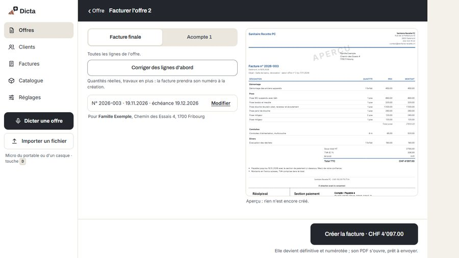
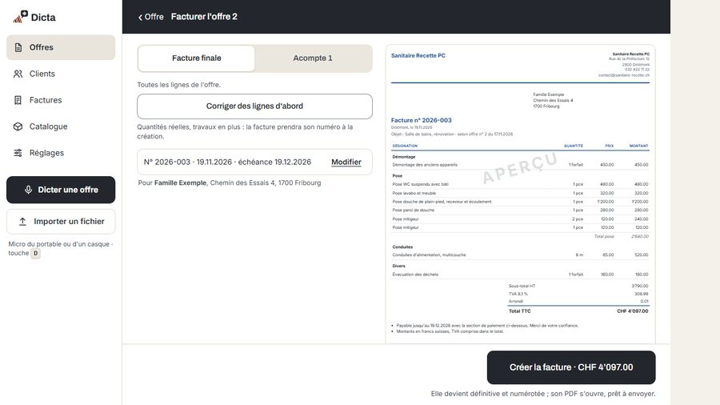
Ton choix
9. Petits défauts, à corriger ou à laisser
Vus par les agents, sans capture ici. Une ligne chacun.
En bas de l'offre, « Total TTC » apparaît deux fois (fin des lignes et barre du bas). Proposition : le retirer des lignes quand la barre le montre.
Le bouton « + » de l'offre n'a pas de mot. Proposition : « + Ligne ».
Le PDF est en DejaVu Sans, l'écran en Inter. Proposition : donner Inter et Archivo au PDF, comme la charte.
Sur tablette et en paysage, le logo de la connexion est collé à gauche, le formulaire est centré. Proposition : le logo dans la colonne du formulaire.
En sombre, la pastille de couleur anthracite des réglages de marque se voit à peine (1,5:1). Proposition : un liseré clair autour des pastilles.
« Voir en grand » est 30 px sous la carte du modèle, hors de son cadre. Proposition : le mettre dans la carte.
Après un envoi refusé, l'assistant revient en haut ; les champs en erreur sont sous l'écran. Proposition : descendre au premier champ en erreur.
Sur tablette debout, le statut de la facture et « Annuler la facture » sont sous deux pages de PDF. Proposition : le panneau au-dessus du PDF.
Déjà corrigé après la recette (mesuré, rien à trancher)
- Champs côte à côte : un message d'erreur ne fait plus descendre le voisin (25 à 44 px avant), Téléphone et IDE restent alignés.
- PDF de l'offre : conditions, signature et pied restent ensemble ; la signature ne part plus seule en page 2.
- Tablette couchée : document, aperçu PDF, listes et formulaires sur 720 px (1124 px avant).
- Lignes : les lignes signalées ne décalent plus les colonnes ; « Qté » au-dessus de son champ ; corbeille dans sa colonne avec le document à côté.
- Lisibilité : texte indicatif en italique ; pied du document à 7,9:1 ; totaux du document sur une ligne au téléphone ; bords des puces au gris des boutons.
- Cibles : liens de factures à 48 px ; chevrons sur les volets dépliables ; croix du micro refusé hors du message.
- PC : survol des cartes, lignes et boutons ; relecture en haut ; plus de bande blanche en bas.
- Divers : compteur des clients masqué sans résultat ; bandeau au-dessus du micro ; double point des erreurs.
Copier mes réponses
Ce texte se remplit avec tes choix. Copie-le et colle-le dans la conversation.
Copié.